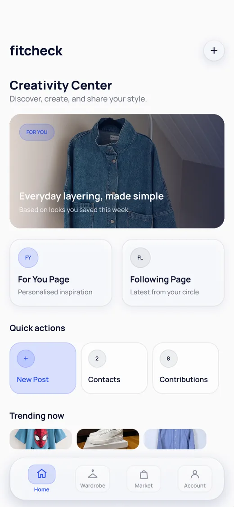
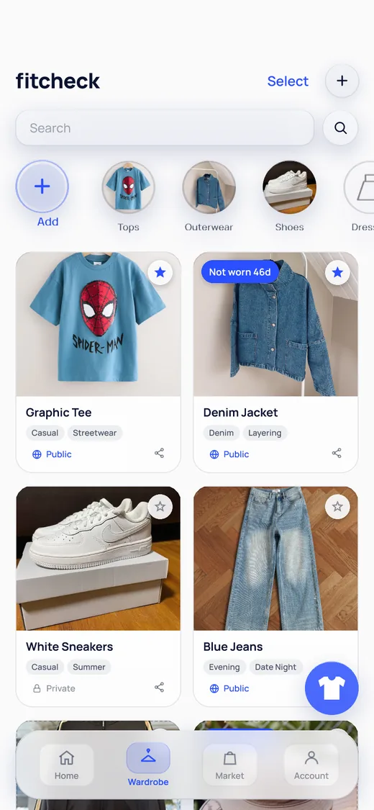
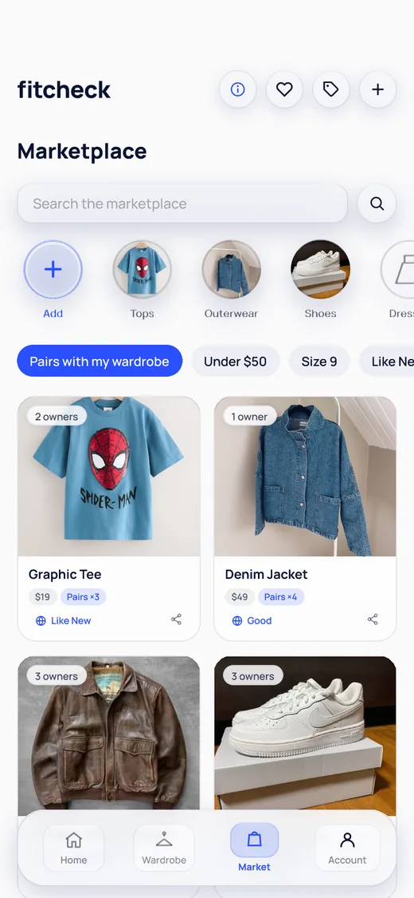
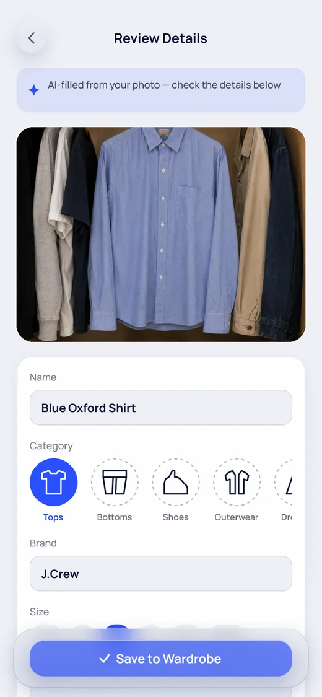
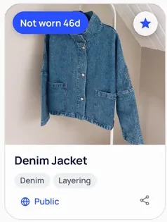
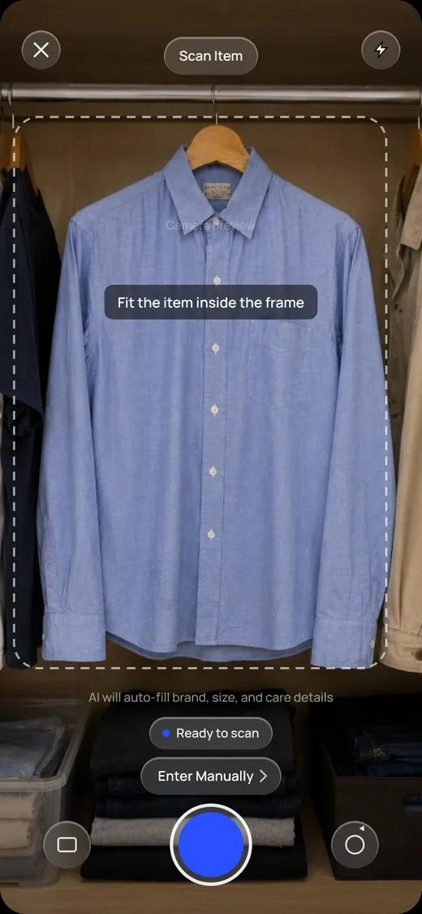

FitCheck
A fashion super-app concept that won First Prize at the National University of Singapore’s School of Computing summer workshop, where I designed the Virtual Wardrobe and created the design system for our team of four.
- Role
- Team lead, Virtual Wardrobe, design system
- Timeline
- July 2026 (one month)
- Tools
- Figma, Maze
- Recognition
- First Prize
The Problem
Young people currently manage their wardrobes, outfit decisions, shopping, resale, and fashion inspiration across disconnected tools. This makes it difficult to use what they already own, make confident fashion decisions, and develop a consistent personal style.
FitCheck brings it all into one app by connecting four services: a Virtual Wardrobe, an Outfit Designer, a Marketplace for buying and reselling, and Outfit Sharing.
The service I designed, the Virtual Wardrobe, focuses on a narrower problem. People own more clothes than they actually use, and without a clear picture of what’s in their closet, they default to the same few outfits, forget items they already bought, and struggle to answer a basic question: what do I actually have, and what should I wear?
Context & Constraints
FitCheck was our group project for Designing Interactive Interfaces: UI/UX in the Digital World, an intensive course in the NUS School of Computing Summer Workshop in Singapore. I led our team of four, working alongside Li Ka Kit, Ji Caitong, and Chen Xiangning. I designed the Virtual Wardrobe, created the design system used across the whole app, and took part in all of the group work, including research, the ecosystem map, and testing.
- We only had one month for the entire project, from research to the final showcase, so our research and testing had to be small but efficient.
- Our primary users are teenagers and young adults, whose interest in fashion can vary heavily, from people who only dress for the occasion to people who live and breathe fashion. As such, we needed to design for both, as well as secondary users like content creators and clothing resellers.
- The four services also had to feel like one continuous experience rather than separate apps.
Process
Research
Due to our one-month timeline, we had to keep our research small while getting as much out of it as possible. As such, we conducted four semi-structured interviews with a stratified sample, ranging from people who only dress for the occasion to people who decide what to wear every single day. Since fashion is inherently a form of creative expression, we needed qualitative data, which is why we chose interviews so that we could directly ask people about their fashion habits. We went in with a list of questions, but some were only asked when they applied, such as follow-up questions about thrifting only being asked if the interviewee actually thrifted.
From there, we clustered our findings into an affinity diagram and created two personas designed to be polar opposites. This let our personas cover our entire primary user base while also dipping into the secondary ones. Our personas then helped us figure out how the app should flow, which we mapped out in a user journey map for Alex.
Alex
Doesn’t care too much about fashion and only wants to be styled for relevant occasions.
Sam
Wants to make a career out of fashion.
Design system
COLOR, WITH CONTRAST ON WHITE
- Ink / Navy 18.3:1
- Accent Blue 5.74:1
- Destructive Red 4.83:1
- Canvas White
TOKENS
PrimitivesSemanticsUsage
SURFACES
Glass for controls, crisp for content
I created the design system for the whole app, built around a calm, photo-first interface that keeps the focus on the user’s clothes.
- Accessible color. Every color is documented with its WCAG contrast ratio, such as navy text at 18.3:1 and the accent blue at 5.74:1. We kept the palette to a few key colors so the clothes wouldn’t be overshadowed by a busy visual design. Blue and white are both neutral colors in fashion, so they don’t clash with anything. Pretty much everyone owns something blue, like a pair of jeans, and white really lets the clothing shine. Red is reserved for destructive actions like deleting, to stay consistent with other apps.
- Three tiers of tokens. Primitives feed into semantic tokens, which then feed into components. This means a rebrand only needs to be edited in one place.
- Glass vs. crisp. Translucent, blurred “glass” is reserved for navigation and controls, while content like cards and forms stays solid. This gives the interface a lighter feel and a clearer sense of depth, and since it mirrors iOS’s Liquid Glass, the app feels native to the platform.
- One type family. We used Manrope in six sizes. Its geometric, slightly rounded style feels approachable rather than corporate, and its wide range of weights gives us a full type hierarchy from a single font family.
Designing the Virtual Wardrobe
Each design decision was based on what our interviewees told us.
-

Fast cataloging
“I would not spend hours photographing and entering every item I own.”
To make adding an item as quick as possible, an AI camera scan fills in its category, brand, size, and condition in seconds. Entering details manually uses the exact same form, so typing it in yourself is always an option.
-
Deciding what to wear
“I mainly wear the same few clothes because they are easier to find.”
Users can mark their favorite pieces so they show up first in the wardrobe, and they can virtually try on any item straight from the grid rather than digging through their closet.
-

Surfacing forgotten items
“I sometimes forget that I already own a similar item.”
A one-tap “Mark as Worn” button builds a wear history, and item cards flag pieces that haven’t been worn in a while so they don’t get lost in the grid.

Scan an itemPrototyping and testing
We built FitCheck into an interactive, testable prototype in Figma. Try the prototype (opens in new tab).
Before the final iteration, we ran a lightweight heuristic review alongside an unmoderated usability study in Maze. Due to our one-month timeline, the study was less about large-scale research and more about getting familiar with usability testing and catching real problems. Participants completed four realistic tasks, such as adding an item to their wardrobe, without being shown the intended path, and then freely explored the app so we could see what naturally caught their attention.
- Add an item to your wardrobe
- Create an outfit
- Recreate a shared look
- Create and share an outfit post
Outcome
FitCheck won First Prize at the workshop’s final showcase. View the certificate (PDF)
Building the Maze study helped us think beyond static screens and define what successful interaction actually means. It also showed us where our prototype needed clearer feedback and more complete navigation.